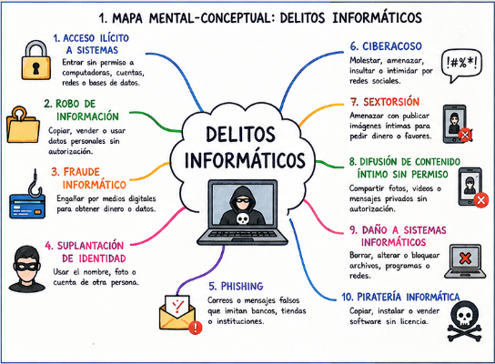
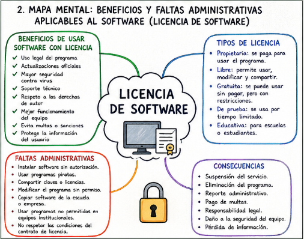
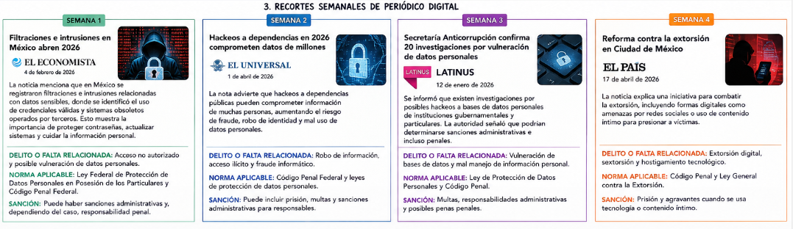
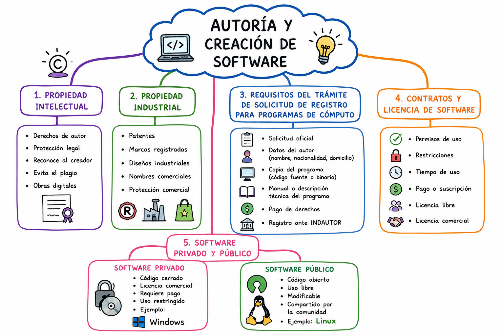

Marco juridico en México
Punto A
1. Piratería y falsificación de software.
La piratería de software consiste en copiar, distribuir, instalar o utilizar programas sin autorización del propietario o sin contar con una licencia legal. En México, esto representa una violación a los derechos de autor y puede generar sanciones administrativas y penales.
2. Tipos de piratería de software.
- Piratería de usuario final: Ocurre cuando una persona instala un software en más computadoras de las permitidas por la licencia o utiliza programas sin haberlos comprado legalmente.
- Uso excesivo del servidor por parte del cliente: Sucede cuando una empresa o usuario utiliza más conexiones o accesos al software de los autorizados en el contrato de licencia.
- Piratería de Internet: Consiste en descargar, compartir o distribuir programas de manera ilegal mediante páginas web, redes sociales o plataformas digitales.
- Carga de disco duro: Es la instalación ilegal de software en computadoras nuevas antes de venderlas al consumidor.
- Falsificación de software: Consiste en copiar programas y venderlos como si fueran originales, incluyendo empaques, logos y manuales falsos.
3. Legislación y normativa de software en México.
En México existen leyes que protegen los programas de cómputo y castigan su uso ilegal.
- Policía cibernética mexicana: Es una división especializada encargada de investigar delitos informáticos, fraudes digitales, robo de información y ataques a sistemas computacionales.
- Ley Federal del Derecho de Autor Capítulo IV: Establece la protección legal de los programas de cómputo en México.
- Artículos 101 al 106: Protegen los programas de computación como obras intelectuales y prohíben su reproducción o distribución sin autorización.
- Artículos 111 al 113: Establecen sanciones y responsabilidades por el uso o reproducción ilegal del software.
4. Acceso no autorizado a sistemas de información.
Se refiere al ingreso ilegal a sistemas o equipos informáticos sin permiso del propietario.
- Sabotaje informático: Consiste en destruir, modificar o dañar sistemas, redes o información digital.
- Fraude informático: Uso de computadoras o sistemas para engañar y obtener dinero o beneficios ilegales.
- Espionaje informático o fuga de datos: Robo o filtración de información confidencial de personas, empresas o instituciones.
- Herramientas de software comúnmente utilizadas: Malware, virus, spyware, ransomware, phishing y keyloggers.
- Artículos 211 Bis 1 al Bis 7 del Código Penal Federal: Castigan el acceso ilícito a sistemas y equipos informáticos en México.
5. Autoría y creación de software.
La creación de software está protegida por leyes relacionadas con la propiedad intelectual.
- Propiedad intelectual: Protege las creaciones de una persona, como programas, diseños o inventos.
- Propiedad industrial: Protege marcas, logotipos, patentes y diseños utilizados comercialmente.
- Requisitos para el trámite de registro de Programas de Cómputo: Nombre del autor, identificación oficial, descripción del software, código fuente, solicitud y pago de derechos.
- Qué se considera público y privado: La información pública puede consultarse libremente, mientras que la privada está protegida por la ley.
6. Contratos y licencias de software.
Son acuerdos legales que establecen las condiciones de uso de un programa informático.
- Licencia comercial: Requiere pago y autorización para utilizar el software.
- Software libre: Permite modificar y distribuir el programa libremente.
- Software propietario: Tiene restricciones de uso establecidas por el creador.
- Licencia educativa: Diseñada para estudiantes o instituciones académicas.
Punto B
1. Normativas aplicadas al equipo de cómputo.
- De la responsabilidad: Los usuarios deben cuidar correctamente los equipos de cómputo, proteger sus contraseñas y utilizar los dispositivos únicamente para actividades autorizadas.
- Del respaldo, ambiente y limpieza: Se deben realizar copias de seguridad, mantener los equipos en lugares ventilados y realizar limpieza preventiva para evitar daños y pérdida de información.
- De los servicios institucionales: Los servicios como internet, correo electrónico y redes internas deben utilizarse únicamente para actividades académicas o laborales autorizadas.
- De las adquisiciones de equipo de cómputo y suministros: La compra de equipos y suministros debe realizarse siguiendo procedimientos administrativos para garantizar calidad y seguridad.
2. Acceso no autorizado a equipos de cómputo y telecomunicaciones.
Ocurre cuando una persona ingresa ilegalmente a sistemas o dispositivos sin permiso, utilizando robo de contraseñas, malware o hackeo.
- Riesgos para las empresas: Robo de información, pérdidas económicas, daño a la reputación y fraudes electrónicos.
- Riesgos para los usuarios: Robo de identidad, pérdida de archivos, acceso a cuentas bancarias y virus.
- Medidas de seguridad: Utilizar contraseñas seguras, antivirus, respaldos, firewalls y autenticación de dos factores.
3. Artículos 367 al 370 del Código Penal Federal relativo al robo de equipo.
- Artículo 367: Define el delito de robo de bienes muebles, incluyendo equipos de cómputo.
- Artículo 368: Considera robo el aprovechamiento ilegal de bienes ajenos.
- Artículo 369: Establece agravantes cuando el robo se realiza con violencia o abuso de confianza.
- Artículo 370: Señala sanciones y multas dependiendo del valor del equipo robado.
Mapas conceptuales
Mapa conceptual 1

Mapa conceptual 2

Mapa conceptual 3

Mapa conceptual 4
